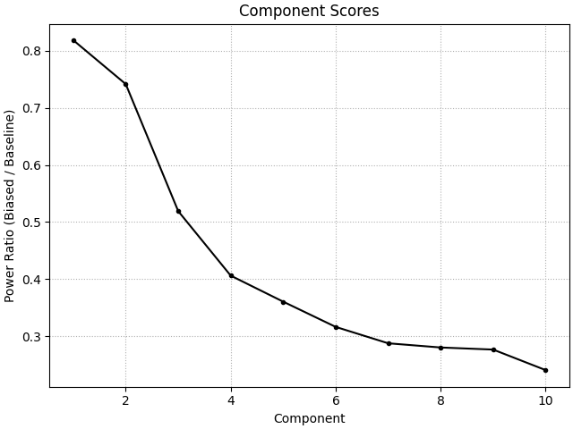
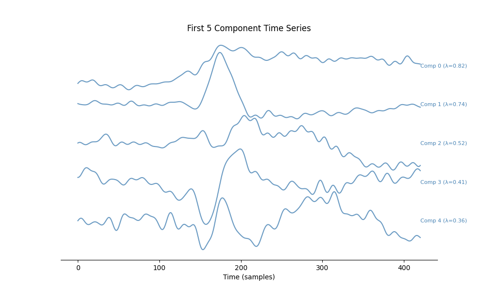
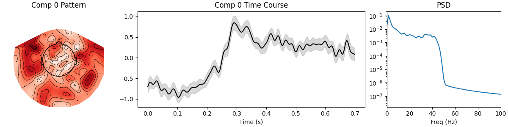
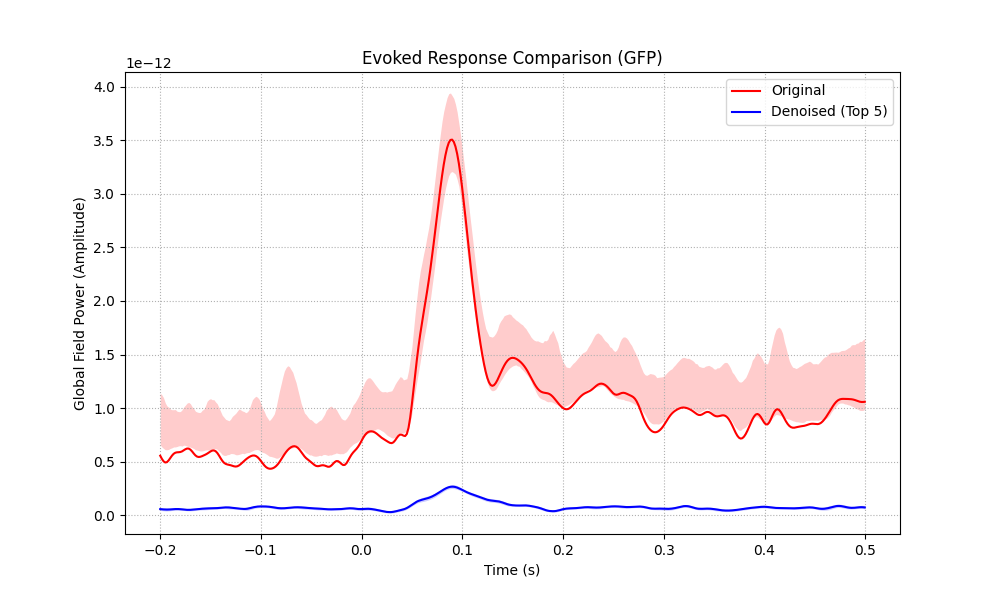
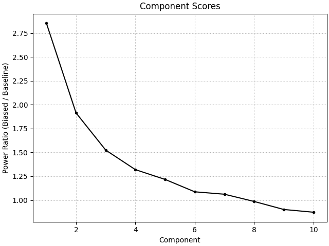
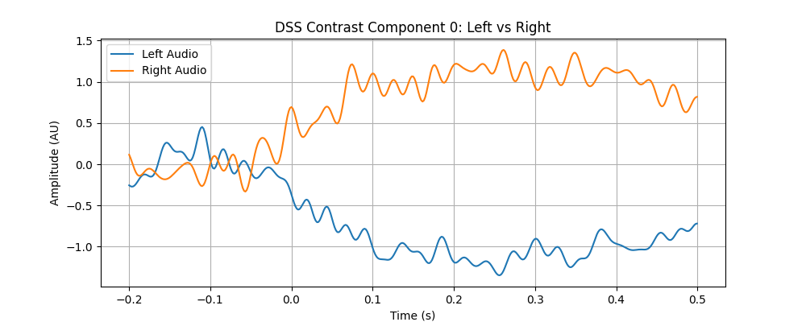
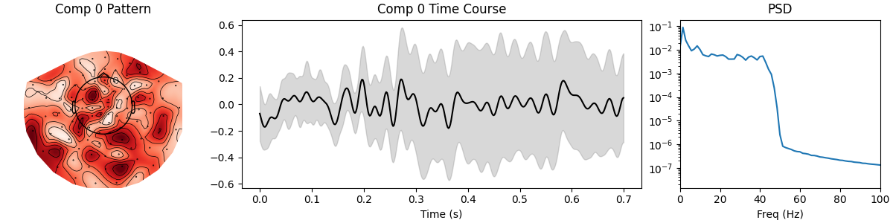

Note
Go to the end to download the full example code.
Denoising Evoked Responses.#
This example demonstrates how to use DSS to enhance Evoked Responses (ERPs/ERFs). We explore two strategies: 1. Standard Denoising: Using AverageBias to enhance the common evoked response (N100/P200). 2. Contrast Enhancement: Building a Custom Bias to isolate the difference between two experimental conditions (Left vs Right Audio).
- Authors: Sina Esmaeili (sina.esmaeili@umontreal.ca)
Hamza Abdelhedi (hamza.abdelhedi@umontreal.ca)
Imports#
import contextlib
import os
import matplotlib.pyplot as plt
import mne
import numpy as np
from mne.datasets import sample
from mne_denoise.dss import DSS, AverageBias, LinearDenoiser
from mne_denoise.viz import (
plot_component_summary,
plot_component_time_series,
plot_evoked_comparison,
plot_score_curve,
)
Part 0: Synthetic Data Demo#
Before using real data, let’s demonstrate the concept on a simple simulation. We create a known “Evoked Response” (damped sinusoid) and bury it in noise.
Goal: Recover the template signal from the noisy mixture.
print("\n--- Part 0: Synthetic Data Demo ---")
# 1. Simulate Data
rng = np.random.default_rng(42)
n_epochs = 50
n_channels = 10
n_times = 200
sfreq = 100
times = np.arange(n_times) / sfreq
# Define the "True" Evoked Response (N100-like)
# Peak around 100ms (0.1s)
signal = -np.exp(-((times - 0.5) ** 2) / 0.01) * np.sin(2 * np.pi * 5 * times)
signal /= np.max(np.abs(signal)) # Normalize
# Embed in Epochs
epochs_data = np.zeros((n_epochs, n_channels, n_times))
mixing = rng.standard_normal(n_channels)
mixing /= np.linalg.norm(mixing)
signal_strength = 0.5
for i in range(n_epochs):
# Noise: non-phase-locked (random every trial)
noise = rng.standard_normal((n_channels, n_times)) * 2.0
# Add signal (phase-locked)
for ch in range(n_channels):
epochs_data[i, ch, :] = noise[ch] + mixing[ch] * signal * signal_strength
# Create MNE Epochs
info_sim = mne.create_info(n_channels, sfreq, "eeg")
events_sim = np.array([[i * 1000, 0, 1] for i in range(n_epochs)])
epochs_sim = mne.EpochsArray(
epochs_data, info_sim, events=events_sim, tmin=-0.5, verbose=False
)
# 2. Fit DSS
dss_sim = DSS(n_components=5, bias=AverageBias(axis="epochs"))
dss_sim.fit(epochs_sim)
# 3. Visualize Results
# Plot true signal vs First DSS component
# DSS component sign is arbitrary, so we match it to the template for comparison
sources_sim = dss_sim.transform(epochs_sim)
evoked_source = sources_sim.mean(axis=0)[0] # First component, averaged trials
if np.corrcoef(evoked_source, signal)[0, 1] < 0:
evoked_source *= -1
plt.figure(figsize=(8, 4))
plt.plot(times, signal, "k--", label="True Signal", alpha=0.6)
plt.plot(
times,
evoked_source / np.max(np.abs(evoked_source)),
"r-",
label="Recovered (DSS Comp 0)",
)
plt.plot(
times,
epochs_sim.average().data[0] / np.max(np.abs(epochs_sim.average().data[0])),
"g-",
alpha=0.3,
label="Channel Average (Noisy)",
)
plt.title("Synthetic Demo: Signal Recovery")
plt.legend()
plt.show(block=False)
print("Synthetic demo complete. Proceeding to Real Data...\n")

--- Part 0: Synthetic Data Demo ---
/home/runner/work/mne-denoise/mne-denoise/mne_denoise/dss/linear.py:492: RuntimeWarning: Epochs are not baseline corrected, covariance matrix may be inaccurate
baseline_cov = mne.compute_covariance(inst, method=method, **kws)
/home/runner/work/mne-denoise/mne-denoise/mne_denoise/dss/linear.py:494: RuntimeWarning: Epochs are not baseline corrected, covariance matrix may be inaccurate
biased_cov = mne.compute_covariance(biased_inst, method=method, **kws)
Synthetic demo complete. Proceeding to Real Data...
Load Data#
print("Loading MNE Sample data...")
home = os.path.expanduser("~")
mne_data_path = os.path.join(home, "mne_data")
if not os.path.exists(mne_data_path):
with contextlib.suppress(OSError):
os.makedirs(mne_data_path)
data_path = sample.data_path()
raw_fname = data_path / "MEG" / "sample" / "sample_audvis_raw.fif"
raw = mne.io.read_raw_fif(raw_fname, preload=True, verbose=False)
raw.crop(0, 60) # Keep it short for speed
# Filter to clearer evoked band (1-40 Hz)
raw.filter(1, 40, fir_design="firwin")
# Extract events
events = mne.find_events(raw, stim_channel="STI 014")
event_id = {"Auditory/Left": 1, "Auditory/Right": 2}
# Create Epochs
epochs = mne.Epochs(
raw,
events,
event_id,
tmin=-0.2,
tmax=0.5,
baseline=(None, 0),
reject={"grad": 4000e-13, "mag": 4e-12, "eog": 150e-6},
preload=True,
verbose=False,
)
# Pick MEG data for DSS
epochs_meg = epochs.copy().pick_types(meg=True, eeg=False, eog=False, exclude="bads")
print(f"Epochs: {len(epochs_meg)} trials, {len(epochs_meg.ch_names)} channels")
Loading MNE Sample data...
Filtering raw data in 1 contiguous segment
Setting up band-pass filter from 1 - 40 Hz
FIR filter parameters
---------------------
Designing a one-pass, zero-phase, non-causal bandpass filter:
- Windowed time-domain design (firwin) method
- Hamming window with 0.0194 passband ripple and 53 dB stopband attenuation
- Lower passband edge: 1.00
- Lower transition bandwidth: 1.00 Hz (-6 dB cutoff frequency: 0.50 Hz)
- Upper passband edge: 40.00 Hz
- Upper transition bandwidth: 10.00 Hz (-6 dB cutoff frequency: 45.00 Hz)
- Filter length: 1983 samples (3.302 s)
Finding events on: STI 014
86 events found on stim channel STI 014
Event IDs: [ 1 2 3 4 5 32]
NOTE: pick_types() is a legacy function. New code should use inst.pick(...).
Epochs: 34 trials, 305 channels
Part 1: Standard Evoked Denoising#
Goal: Maximize the ratio of (Evoked Power) / (Total Power). This finds components that are perfectly repeatable across trials (the “Evoked Response”).
print("\n--- Part 1: Standard Trial Average Bias ---")
# 1. Fit DSS
# We use AverageBias(axis='epochs'), which replaces every trial with the mean of all trials.
dss_std = DSS(
n_components=10,
bias=AverageBias(axis="epochs"),
cov_method="empirical",
cov_kws={"n_jobs": 1},
)
dss_std.fit(epochs_meg)
# Visualize
# The score curve shows how "evoked" each component is (0 to 1).
plot_score_curve(dss_std, mode="ratio", show=False)
# Time Series of top components
plot_component_time_series(dss_std, data=epochs_meg, n_components=5, show=False)
# The first component should be the dominant N100 response.
plot_component_summary(dss_std, data=epochs_meg, n_components=[0], show=False)
# 3. Denoising Effect
# We reconstruct the data using ONLY the top few reproducible components.
# This removes "non-evoked" background noise (alpha waves, etc. that are not phase-locked).
keep_n = 5
print(f"Reconstructing Evoked with top {keep_n} components...")
# Transform -> Zero out noise -> Inverse
sources = dss_std.transform(epochs_meg)
# Create a mask to keep only top N
mask = np.zeros(dss_std.n_components, dtype=bool)
mask[:keep_n] = True
# Inverse transform (filtering out the rest)
clean_data = dss_std.inverse_transform(sources, component_indices=mask)
epochs_clean = mne.EpochsArray(
clean_data,
epochs_meg.info,
tmin=epochs_meg.tmin,
events=epochs_meg.events,
event_id=epochs_meg.event_id,
)
# Compare Global Field Power
plot_evoked_comparison(
epochs_meg,
epochs_clean,
labels=("Original", f"Denoised (Top {keep_n})"),
show=False,
)
plt.show(block=False) # Show it but don't stop execution
# Quantify Improvement (SNR = Peak Evoked Power / Baseline Variance)
def get_snr(ep):
evoked = ep.average()
gfp = np.std(evoked.data, axis=0) # spatial std (GFP)
# SNR = Peak post-stim / Mean pre-stim
return np.max(gfp[ep.times > 0]) / np.mean(gfp[ep.times < 0])
snr_in = get_snr(epochs_meg)
snr_out = get_snr(epochs_clean)
print(
f"SNR Improvement: {snr_in:.2f} -> {snr_out:.2f} ({snr_out / snr_in:.1f}x improvement)"
)
- 
- 
- 
- 
--- Part 1: Standard Trial Average Bias ---
Reconstructing Evoked with top 5 components...
Not setting metadata
34 matching events found
No baseline correction applied
Created an SSP operator (subspace dimension = 3)
3 projection items activated
SNR Improvement: 6.72 -> 4.05 (0.6x improvement)
Part 2: Custom Contrast Bias (Oddball / Difference)#
Goal: Find components that maximize the Difference between Condition A and B. This is useful for isolating the specific network responsible for distinguishing stimuli.
print("\n--- Part 2: Custom Contrast Bias ---")
# Define Custom Bias Class
class ContrastBias(LinearDenoiser):
"""Enhance the difference between two conditions."""
def __init__(self, events, id_a, id_b):
self.events = events
self.id_a = id_a
self.id_b = id_b
def apply(self, data):
# data shape: (n_channels, n_times, n_epochs)
# Note: 'data' passed to apply is usually the full epoch data matrix
# We need to know which epoch belongs to which condition.
# Ideally, we pass 'events' to init so we can index.
# Identify indices
idx_a = [i for i, evt in enumerate(self.events) if evt[2] == self.id_a]
idx_b = [i for i, evt in enumerate(self.events) if evt[2] == self.id_b]
if len(idx_a) == 0 or len(idx_b) == 0:
raise ValueError("Events for Condition A or B not found in data.")
# Compute means
# data is (n_ch, n_times, n_epochs)
mean_a = data[:, :, idx_a].mean(axis=2)
mean_b = data[:, :, idx_b].mean(axis=2)
# The 'Biased' signal is the Difference Wave
diff = mean_a - mean_b
# We start with a zero array
biased = np.zeros_like(data)
# For this bias, we want to maximize power in the difference.
# So we replace *every* trial with the difference wave.
# (Or we could replace A trials with +Diff/2 and B trials with -Diff/2,
# but projecting onto the simple Difference vector is robust).
biased = np.broadcast_to(diff[:, :, np.newaxis], data.shape).copy()
return biased
# 1. Setup Custom Bias
# Left (1) vs Right (2)
custom_bias = ContrastBias(epochs_meg.events, id_a=1, id_b=2)
# 2. Fit DSS
dss_diff = DSS(
n_components=10, bias=custom_bias, cov_method="empirical", cov_kws={"n_jobs": 1}
)
dss_diff.fit(epochs_meg)
# 3. Visualize
# Component 0 should be the "Difference Component".
plot_score_curve(dss_diff, mode="ratio", show=False)
# Let's plot the time series of Comp 0 for Left vs Right conditions separate.
# We expect to see a strong separation.
src_diff = dss_diff.transform(epochs_meg) # (n_epochs, n_comps, n_times)
# Average by condition
src_left = src_diff[epochs_meg.events[:, 2] == 1].mean(axis=0)
src_right = src_diff[epochs_meg.events[:, 2] == 2].mean(axis=0)
times = epochs_meg.times
plt.figure(figsize=(10, 4))
plt.plot(times, src_left[0], label="Left Audio", color="tab:blue")
plt.plot(times, src_right[0], label="Right Audio", color="tab:orange")
plt.title("DSS Contrast Component 0: Left vs Right")
plt.xlabel("Time (s)")
plt.ylabel("Amplitude (AU)")
plt.legend()
plt.grid(True)
plt.show()
# 4. Topography of the Difference
# This topography explains the *difference* between left and right.
plot_component_summary(dss_diff, data=epochs_meg, n_components=[0], show=True)
- 
- 
- 
--- Part 2: Custom Contrast Bias ---
<Figure size 1200x300 with 3 Axes>
Total running time of the script: (0 minutes 19.693 seconds)